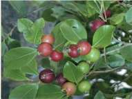

¿Cuál es su
origen?
¿Qué
características
tiene?
Es uno de los frutos nativos originarios del Uruguay, Argentina y sur de Brasil. Pertenece a la familia de las mirtáceas. Es perenne y forma un arbolito que llega a los 4m de altura. Sus frutos son redondeados, con piel color rojizo o amarillo, y alcanzan entre 3 y 4 cm de diámetro.
Florecen en octubre –noviembre. Los frutos, cuando están maduros, desarrollan un alto nivel de aroma, especial y característico, que los diferencia claramente de otros frutos silvestres. Presentan un alto contenido de azúcares y baja acidez.
¿Cuándo y cómo
se planta?
Es preferible manejar las plantas en maceta ya que siempre están con hojas. Los podemos plantar en cualquier época, aunque sufren menos en invierno. Hasta el momento, no presentan gran diversidad en cuanto al aspecto del fruto, por lo que es una especie que puede multiplicarse por semilla.
¿Cómo se
cuida?
Son plantas muy adaptadas a nuestras condiciones que no
requieren mayor cuidado.
¿Cómo se
cosecha?
Los frutos de arazá maduran en febrero - abril. Se puede cosechar en varias pasadas a medida que van madurando. La facilidad para desprender el fruto, así como una menor
consistencia, nos ayudan a identificar los que están prontos para cosechar.
¿Cómo se
consume?
Los frutos de arazá, por su sabor y aroma, hacen que sean
apetecibles en estado fresco. No obstante son una excelente materia prima para la preparación de mermeladas, licores y aromatizantes.
¿Qué nos
aporta?
Es una fuente natural de compuestos antioxidantes, que inciden en la disminución del riesgo de cáncer y enfermedades cardiovasculares.
Prestar
atención a:
Los frutos maduros suelen ser atacados por la mosca de la
fruta.